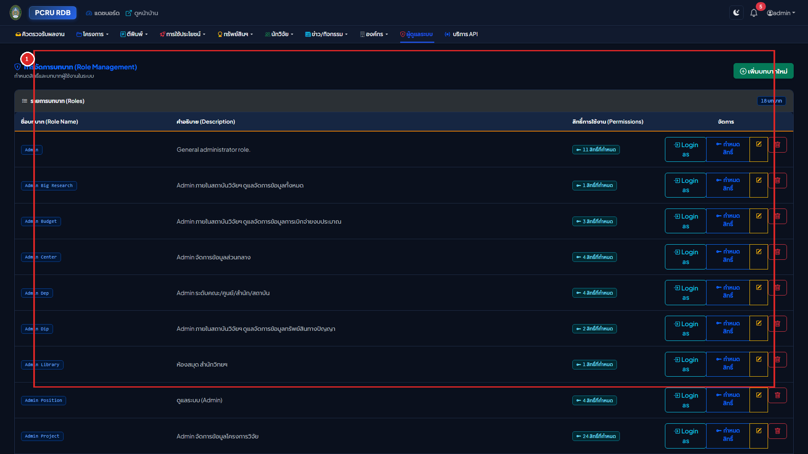
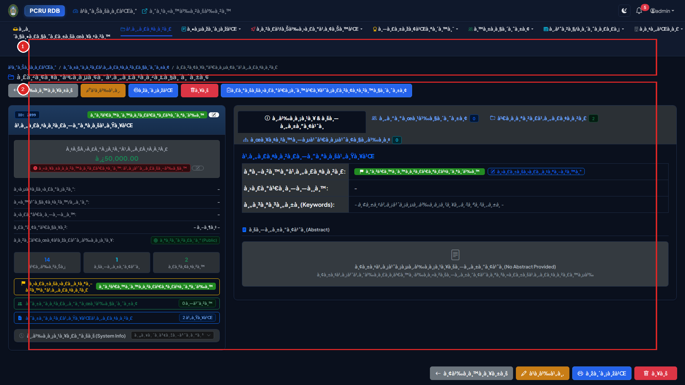
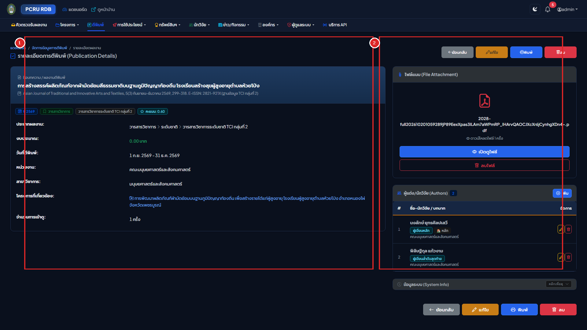

เล่มที่ 2: คู่มือการใช้งานระบบหลังบ้าน (Volume 2: Backend Administrative & Researcher Manual)
ระบบฐานข้อมูลงานวิจัย มหาวิทยาลัยราชภัฏเพชรบูรณ์ (PCRU Research Database)
ข้อมูลจำเพาะของเอกสาร (Document Control)
- รหัสเอกสาร:
PCRU-RDB-MAN-VOL2-2569 - กลุ่มผู้ใช้งานเป้าหมาย: นักวิจัย (Researcher), ผู้ทรงคุณวุฒิประเมินงานวิจัย (Reviewer), ผู้ประสานงานคณะ (Faculty Coordinator), เจ้าหน้าที่สถาบันวิจัยและพัฒนา (Admin / Domain Admin) และผู้ดูแลระบบสูงสุด (Super Admin)
- URL เข้าสู่ระบบหลังบ้าน:
http://laravel_rdb.test/login➔/backend/site
สารบัญ (Table of Contents)
- บทที่ 1: การเข้าสู่ระบบและความปลอดภัยของบัญชี (Authentication & Account Security)
- บทที่ 2: โครงสร้างบทบาท สิทธิ์การใช้งาน และการจำลองสิทธิ์ (RBAC & Impersonation)
- บทที่ 3: วงจรชีวิตการส่งร่าง ตรวจสอบ และอนุมัติเปิดเผยผลงาน (Workflow Lifecycle: WF-01 ถึง WF-07)
- บทที่ 4: การบริหารจัดการโครงการวิจัยขั้นสูง ระบบนับหน้า PDF และปก .webp
- บทที่ 5: ระบบตรวจประเมินเล่มรายงานวิจัยฉบับสมบูรณ์ (Peer Review Subsystem)
- บทที่ 6: การบริหารจัดการผลงานตีพิมพ์ ทรัพย์สินทางปัญญา และการใช้ประโยชน์
- บทที่ 7: การบริหารข้อมูลนักวิจัยและการเชื่อมโยงฐานข้อมูลสากล (Scopus & ORCID)
- บทที่ 8: การส่งออกข้อมูล UTF-8 BOM Excel และการเชื่อมต่อคลังปัญญา DSpace SAF
- บทที่ 9: ประวัติการใช้งาน (Audit Logs) และการตั้งค่าความปลอดภัยของระบบ
บทที่ 1: การเข้าสู่ระบบและความปลอดภัยของบัญชี (Authentication & Account Security)

1.1 ขั้นตอนการเข้าสู่ระบบ (Sign-in Procedure)
- คลิกปุ่ม "เข้าสู่ระบบ (Login)" ที่มุมขวาบนของหน้าเว็บหลัก หรือไปที่ URL
/login - วิธีที่ 1: เข้าสู่ระบบด้วย Google Workspace มหาวิทยาลัย (แนะนำสำหรับอาจารย์และบุคลากร) (กรอบ
[1]):- คลิกปุ่ม "เข้าสู่ระบบด้วยบัญชี Google (@pcru.ac.th)"
- เลือกอีเมลของมหาวิทยาลัย ระบบจะตรวจสอบและเชื่อมโยงกับข้อมูลนักวิจัยในฐานข้อมูลโดยอัตโนมัติ
- วิธีที่ 2: เข้าสู่ระบบด้วยชื่อผู้ใช้และรหัสผ่าน (สำหรับผู้ดูแลระบบและบัญชีเดิม) (กรอบ
[2]):- คลิกเปิดส่วนฟอร์มเข้าสู่ระบบ กรอก Username / Email และ Password
- กดปุ่ม "เข้าสู่ระบบ" เพื่อเข้าสู่หน้าแดชบอร์ดหลังบ้าน (
/backend/site)
นโยบายการสมัครสมาชิกใหม่: ระบบไม่อนุญาตให้บุคคลภายนอกสมัครสมาชิกด้วยตนเองผ่านฟอร์มปกติ การลงทะเบียนผู้ใช้งานใหม่ทั้งหมดต้องผ่าน Google SSO ของมหาวิทยาลัย และผ่านการอนุมัติผูกโปรไฟล์นักวิจัย (Onboarding Approval) จากผู้ดูแลระบบเท่านั้น เพื่อป้องกันบัญชีปลอม
1.2 ภาพรวมหน้าแดชบอร์ดหลังบ้าน (/backend/site)

- หมายเลข
[1]แถบเมนูจัดการหลังบ้านและศูนย์แจ้งเตือน (Backend Navbar & Notification Bell): แสดงเมนูตามสิทธิ์ของผู้ใช้, ปุ่มสลับบทบาท (Role Switcher), กระดิ่งแจ้งเตือนงานใหม่ และเมนูโปรไฟล์ - หมายเลข
[2]การ์ดสรุปสถานะงานวิจัยและงานรอดำเนินการ: แสดงจำนวนโครงการ, งานตีพิมพ์ และรายการที่รอตรวจสอบ - หมายเลข
[3]กราฟวิเคราะห์สถิติและรายการเคลื่อนไหวล่าสุด: แสดงสถิติแยกตามปีงบประมาณ พ.ศ.
บทที่ 2: โครงสร้างบทบาท สิทธิ์การใช้งาน และการจำลองสิทธิ์ (RBAC & Impersonation)


2.1 ตารางระดับสิทธิ์ผู้ใช้งานในระบบ (Role Permission Matrix)
| ชื่อบทบาท (Role) | ขอบเขตการเข้าถึงข้อมูล (Data Scope) | สิทธิ์การดำเนินการหลัก |
|---|---|---|
| The Creator / Super Admin | ทั้งมหาวิทยาลัย (All Faculties) | จัดการทุกโมดูล, ตั้งค่าระบบ, จัดการสิทธิ์ RBAC, จำลองสิทธิ์ (Impersonate), ดู Audit Logs |
| Admin / Admin Research | ทั้งมหาวิทยาลัย | ตรวจรับและอนุมัติผลงานทุกประเภท, ส่งออกข้อมูล Excel และ DSpace SAF |
Domain Admins (Admin Project, Admin Published, Admin Dip, Admin Utilize) |
ทั้งมหาวิทยาลัย (เฉพาะโมดูลที่รับผิดชอบ) | เพิ่ม/แก้ไข/อนุมัติข้อมูลเฉพาะในโมดูลที่ได้รับมอบหมายโดยตรงโดยไม่ต้องรอปลดล็อก |
| Faculty Coordinator | เฉพาะคณะ/หน่วยงานที่สังกัด | ตรวจสอบและกลั่นกรองผลงานของอาจารย์ในคณะตนเอง |
| Researcher (นักวิจัย) | เฉพาะผลงานของตนเองเท่านั้น (Strict Isolation) | สร้างร่างผลงาน, อัปโหลดไฟล์ PDF, ส่งตรวจรับ, ขอปลดล็อกเพื่อแก้ไข, ประเมินเล่มรายงานตามที่ได้รับมอบหมาย |
2.2 การจำลองสิทธิ์เป็นนักวิจัยหรือผู้ใช้รายอื่น (User Impersonation)
ฟังก์ชันสำหรับ Super Admin เพื่อใช้ตรวจสอบหน้าจอหรือช่วยเหลืออาจารย์ที่มีปัญหาการใช้งานโดยไม่ต้องขอรหัสผ่านของอาจารย์:
- ไปที่เมนู "จัดการผู้ใช้งาน" (
/backend/user) หรือ "ทำเนียบนักวิจัย" (/backend/rdb_researcher) - ค้นหาชื่อนักวิจัยที่ต้องการตรวจสอบ แล้วคลิกปุ่มไอคอน "จำลองสิทธิ์ (Impersonate)"
- ระบบจะสลับเข้าสู่มุมมองของนักวิจัยท่านนั้นทันที โดยแสดงแถบแจ้งเตือนสีเหลืองด้านบนสุดของหน้าจอ
- เมื่อตรวจสอบเสร็จสิ้น ให้คลิกปุ่ม "หยุดการจำลองสิทธิ์ (Stop Impersonating)" บนแถบด้านบนเพื่อกลับสู่บัญชีผู้ดูแลระบบตามเดิม
บทที่ 3: วงจรชีวิตการส่งร่าง ตรวจสอบ และอนุมัติเปิดเผยผลงาน (Workflow Lifecycle: WF-01 ถึง WF-07)
ระบบควบคุมคุณภาพข้อมูลวิจัยด้วยกลไก State-Driven Approval Workflow เพื่อป้องกันการแก้ไขข้อมูลโดยพลการหลังจากเผยแพร่แล้ว และรับประกันว่าข้อมูลที่แสดงหน้าบ้านผ่านการตรวจสอบจากสถาบันวิจัยและพัฒนาแล้วทุกรายการ:
stateDiagram-v2
[*] --> Draft : WF-01 นักวิจัยสร้างฉบับร่าง
Draft --> PendingReview : WF-02 นักวิจัยกดส่งตรวจสอบ (Submit)
PendingReview --> RevisionRequired : WF-04 เจ้าหน้าที่ส่งกลับให้แก้ไข (Reject + Remarks)
RevisionRequired --> PendingReview : นักวิจัยแก้ไขและกดส่งตรวจสอบใหม่
PendingReview --> Published : WF-05 เจ้าหน้าที่อนุมัติเผยแพร่ (Approve & Publish + สร้างปก .webp)
Published --> UnlockRequested : WF-06 นักวิจัยขอปลดล็อกเพื่อแก้ไข (Request Unlock + เหตุผล)
UnlockRequested --> Draft : WF-07 Admin อนุมัติปลดล็อก (ย้ายกลับเป็นฉบับร่าง)
UnlockRequested --> Published : Admin ปฏิเสธคำขอปลดล็อก (คงสถานะเผยแพร่เดิม)

3.1 คู่มือปฏิบัติสำหรับนักวิจัย (Researcher Submission Steps)
- ขั้นที่ 1: การบันทึกฉบับร่าง (
WF-01 Draft)- เมื่อนักวิจัยกดเพิ่มข้อมูลในโมดูลโครงการวิจัย, ผลงานตีพิมพ์, ทรัพย์สินทางปัญญา หรือการนำไปใช้ประโยชน์ รายการใหม่จะมีสถานะเริ่มต้นเป็น
ฉบับร่าง (Draft) - ในสถานะนี้ นักวิจัยสามารถแก้ไขข้อมูลและเปลี่ยนไฟล์แนบได้ตลอดเวลา โดยข้อมูลจะยังไม่ปรากฏบนหน้าบ้านสาธารณะ
- เมื่อนักวิจัยกดเพิ่มข้อมูลในโมดูลโครงการวิจัย, ผลงานตีพิมพ์, ทรัพย์สินทางปัญญา หรือการนำไปใช้ประโยชน์ รายการใหม่จะมีสถานะเริ่มต้นเป็น
- ขั้นที่ 2: การกดส่งผลงานให้เจ้าหน้าที่ตรวจสอบ (
WF-02 Submit for Review)- เมื่อกรอกข้อมูลและแนบไฟล์ PDF ครบถ้วนแล้ว ให้เข้าที่หน้ารายละเอียดของรายการนั้น
- คลิกปุ่มสีน้ำเงิน "ส่งตรวจสอบ (Submit for Review)"
- สถานะจะเปลี่ยนเป็น
รอตรวจสอบ (Pending Review)แบบฟอร์มจะถูกล็อกชั่วคราว และระบบจะส่งแจ้งเตือนไปยังเจ้าหน้าที่สถาบันวิจัยฯ ทันที
- ขั้นที่ 3: กรณีได้รับแจ้งให้แก้ไขข้อมูล (
WF-04 Revision Required)- หากเจ้าหน้าที่ตรวจพบข้อมูลไม่สมบูรณ์ นักวิจัยจะได้รับการแจ้งเตือนผ่านกระดิ่งแจ้งเตือน พร้อมกล่องข้อความสีแดงแสดง "เหตุผลและข้อเสนอแนะจากผู้ตรวจสอบ"
- นักวิจัยสามารถคลิก "แก้ไขข้อมูล" ปรับปรุงตามคำแนะนำ แล้วกด "ส่งตรวจสอบ" อีกครั้ง
- ขั้นที่ 4: การขอปลดล็อกเพื่อแก้ไขผลงานที่เผยแพร่แล้ว (
WF-06 Request Unlock)- เมื่อผลงานได้รับอนุมัติเป็น
เผยแพร่แล้ว (Published)ปุ่มแก้ไขและปุ่มลบจะถูกซ่อนและล็อกไว้ตามมาตรฐานธรรมาภิบาลข้อมูล - หากนักวิจัยมีความจำเป็นต้องแก้ไขข้อมูล ให้คลิกปุ่ม "ขอปลดล็อกเพื่อแก้ไข (Request Unlock)" กรอกเหตุผลความจำเป็น แล้วกดยืนยันเพื่อรอ Admin อนุมัติ
- เมื่อผลงานได้รับอนุมัติเป็น
3.2 คู่มือปฏิบัติสำหรับเจ้าหน้าที่และผู้ดูแลระบบ (Admin Review Queue Steps)
- คลิกเมนู "คิวงานตรวจสอบ (Review Queue)" (
/backend/workflow/queue) - ในส่วนที่
[1]เลือกแท็บประเภทผลงานที่ต้องการตรวจ: โครงการวิจัย, ผลงานตีพิมพ์, ทรัพย์สินทางปัญญา, การนำไปใช้ประโยชน์ หรือ คำขอปลดล็อกแก้ไข - ในส่วนที่
[2]คลิกเปิดดูรายละเอียดและตรวจสอบไฟล์เอกสารแนบของนักวิจัย:- กรณีข้อมูลถูกต้องสมบูรณ์ (
WF-05): คลิกปุ่มสีเขียว "อนุมัติและเผยแพร่ (Approve)" ➔ ระบบจะเปลี่ยนสถานะเป็นPublished, เปิดการแสดงผลหน้าบ้าน (data_show = 1) และสั่งสร้างภาพปก.webpอัตโนมัติทันที - กรณีต้องแก้ไข (
WF-04): คลิกปุ่มสีแดง "ส่งกลับแก้ไข (Reject)" ➔ กรอกหมายเหตุชี้แจงจุดที่ต้องแก้ไข แล้วกดยืนยัน - กรณีพิจารณาคำขอปลดล็อก (
WF-07): ในแท็บคำขอปลดล็อก คลิก "อนุมัติปลดล็อก" เพื่อคืนสถานะกลับเป็นDraftให้นักวิจัยแก้ไข หรือคลิก "ปฏิเสธคำขอ" เพื่อคงสถานะเผยแพร่เดิม
- กรณีข้อมูลถูกต้องสมบูรณ์ (
บทที่ 4: การบริหารจัดการโครงการวิจัยขั้นสูง ระบบนับหน้า PDF และปก .webp


4.1 การสร้างและแก้ไขข้อมูลโครงการวิจัย (/backend/rdb_project)
- คลิกปุ่ม "+ เพิ่มโครงการวิจัยใหม่" มุมขวาบนของหน้ารายการ
- กรอกข้อมูลตามขั้นตอนของฟอร์ม:
- ข้อมูลหลัก: รหัสโครงการ, ปีงบประมาณ พ.ศ., ประเภททุนวิจัย, ชื่อโครงการ (ไทย/อังกฤษ)
- ระยะเวลาโครงการ: เลือกวันที่เริ่มต้นและวันที่สิ้นสุดจากปฏิทิน พ.ศ. (ระบบแปลงเก็บเป็น ISO
YYYY-MM-DDอัตโนมัติ) - งบประมาณ: ระบุงบประมาณรวม และสามารถจำแนกงบประมาณรายงวดในหน้ารายละเอียดโครงการ
- ในหน้ารายละเอียดโครงการ (
/backend/rdb_project/{id}) สามารถเพิ่มรายชื่อ คณะผู้วิจัย พร้อมระบุตำแหน่งในโครงการ (หัวหน้าโครงการ,ที่ปรึกษา, ผู้ร่วมวิจัย) และสัดส่วนร้อยละของการทำวิจัย
4.2 การอัปโหลดไฟล์รายงานและการทำงานอัตโนมัติของเครื่องยนต์ PDF (Automated PDF Engine)
เมื่อมีการอัปโหลดไฟล์ PDF เล่มรายงานฉบับสมบูรณ์ (pro_file) ในหน้ารายละเอียดโครงการ ระบบจะทำงานอัตโนมัติ 3 ขั้นตอนทันที:
- การจัดเก็บไฟล์ปลอดภัย (UUID Safe Storage): เปลี่ยนชื่อไฟล์ภายในเป็นรหัสปลอดภัยและจัดเก็บใน
storage/app/public/project/ - การตรวจนับจำนวนหน้าอัตโนมัติ (4-Tier PDF Page Counter):
- ระบบเรียกใช้
Poppler pdftotext/PdfParser/FPDIนับจำนวนหน้าทั้งหมดของไฟล์ PDF (รองรับแม้แต่ไฟล์ PDF ที่ตั้งรหัสป้องกันการแก้ไข) และบันทึกจำนวนหน้าลงฟิลด์pro_page_numทันทีด้วยความแม่นยำ 99.99%
- ระบบเรียกใช้
- การสกัดหน้าแรกเป็นภาพปก
.webpอัตโนมัติ (5-Tier WebP Cover Generator):- ระบบดึงหน้าแรกของไฟล์ PDF แปลงเป็นภาพ
.webpความละเอียดสูงขนาดกะทัดรัด บันทึกไว้ที่storage/app/public/project/covers/เพื่อใช้แสดงเป็นภาพปกหน้าแรกทั้งในหน้าบ้านและหลังบ้าน
- ระบบดึงหน้าแรกของไฟล์ PDF แปลงเป็นภาพ
4.3 การสลับสถานะการเปิดเผยเล่มรายงาน (pro_file_show Toggle)
ในหน้ารายละเอียดโครงการวิจัย การ์ด "รายงานฉบับสมบูรณ์" ผู้ดูแลระบบสามารถคลิกสลับสถานะการเปิดเผยไฟล์ได้ 3 สถานะทันที:
เปิด (0 - Public): เปิดให้ประชาชนทั่วไปดาวน์โหลดเล่มรายงานได้ และระบบจะสร้างภาพปก.webpทันทีหากยังไม่มีปิด (1 - Concealed): ปกปิดเล่มรายงานไม่ให้ดาวน์โหลด (แสดงเฉพาะข้อมูลโครงการและบทคัดย่อ)ร่าง (2 - Draft): สถานะระหว่างดำเนินการตรวจรับ
บทที่ 5: ระบบตรวจประเมินเล่มรายงานวิจัยฉบับสมบูรณ์ (Peer Review Subsystem)

ระบบรองรับการประเมินคุณภาพรายงานวิจัยฉบับสมบูรณ์แบบ Single-Blind Peer Review (ผู้ทรงคุณวุฒิทราบชื่อผู้วิจัย แต่ผู้วิจัยไม่ทราบชื่อผู้ทรงคุณวุฒิ) โดยมีขั้นตอนครบวงจรดังนี้:
5.1 การสร้างและปรับแต่งแบบประเมิน (Dynamic Rubric Form Designer)
- ผู้ดูแลระบบเข้าเมนู "ระบบประเมินรายงานวิจัย" ➔ คลิกปุ่ม "จัดการเกณฑ์แบบประเมิน (Rubric Templates)" (
/backend/project-reviews/templates) - สามารถสร้างชุดแบบประเมิน กำหนดหัวข้อเกณฑ์การประเมิน (Criteria), คะแนนเต็มของแต่ละข้อ และกำหนดระดับสเกลการให้คะแนน (เช่น สเกล 1-5 หรือคะแนนดิบ) ได้อย่างอิสระ
5.2 ขั้นตอนการส่งเล่มรายงานและมอบหมายผู้ทรงคุณวุฒิ
- นักวิจัยส่งไฟล์เล่มรายงานเพื่อรับการประเมิน:
- เข้าที่หน้าประเมินของโครงการ (
/backend/project-reviews/project/{pro_id}) - เลือกประเภทการส่ง (
ส่งร่างครั้งแรก Initial Draft,ส่งฉบับแก้ไขตามข้อเสนอแนะ Revised Draft, หรือส่งเล่มสมบูรณ์ Final Report) และอัปโหลดไฟล์ PDF
- เข้าที่หน้าประเมินของโครงการ (
- ผู้ดูแลระบบมอบหมายผู้ทรงคุณวุฒิ (Assign Reviewers):
- ค้นหาและเลือกผู้ทรงคุณวุฒิ 2-3 ท่าน เลือกแบบประเมินที่ต้องการใช้ และกำหนดวันครบกำหนดส่งผลประเมิน
- ผู้ทรงคุณวุฒิบันทึกผลการประเมิน:
- ผู้ทรงคุณวุฒิเข้าเมนู "งานประเมินของฉัน (My Reviews)" (
/backend/project-reviews/my-reviews) - กดตอบรับการประเมิน เปิดอ่านไฟล์รายงาน กรอกคะแนนรายข้อ ความคิดเห็นเชิงวิชาการ และแนบไฟล์ที่มีการคอมเมนต์กลับเข้าสู่ระบบ
- ผู้ทรงคุณวุฒิเข้าเมนู "งานประเมินของฉัน (My Reviews)" (
- การสรุปผลและอนุมัติเล่มรายงานสมบูรณ์ (
Approve Final Report):- เมื่อผู้ทรงคุณวุฒิประเมินครบและนักวิจัยส่งเล่มสมบูรณ์ที่แก้ไขเรียบร้อยแล้ว ผู้ดูแลระบบกดปุ่ม "อนุมัติเล่มรายงานฉบับสมบูรณ์"
- ระบบจะปรับสถานะโครงการเป็นเสร็จสิ้นสมบูรณ์ และสร้างภาพปก
.webpพร้อมเปิดเผยแพร่โดยอัตโนมัติ
บทที่ 6: การบริหารจัดการผลงานตีพิมพ์ ทรัพย์สินทางปัญญา และการใช้ประโยชน์




6.1 การจัดการผลงานตีพิมพ์ (/backend/rdb_published)
- คลิก "+ เพิ่มผลงานตีพิมพ์" กรอกชื่อบทความ, ชื่อวารสาร, ปี พ.ศ., ประเภทฐานข้อมูลวารสาร, งบประมาณสนับสนุนการตีพิมพ์ และเชื่อมโยงโครงการวิจัยต้นทาง (ถ้ามี)
- เมื่ออัปโหลดไฟล์ PDF บทความ (
pub_file) ระบบจะตรวจนับจำนวนหน้าลงฟิลด์pub_numfileและสกัดหน้าแรกเป็นภาพปก.webpแสดงในหน้ารายละเอียดทันที - ในหน้ารายละเอียด สามารถเพิ่มรายชื่อผู้แต่งร่วม (Co-Authors) และระบุสถานะเป็นผู้ประพันธ์ชื่อแรก (First Author) หรือผู้ประพันธ์บรรณกิจ (Corresponding Author)
6.2 การจัดการทรัพย์สินทางปัญญา (/backend/rdb_dip) และการนำไปใช้ประโยชน์ (/backend/rdbprojectutilize)
- ทรัพย์สินทางปัญญา: บันทึกเลขที่คำขอ, ประเภทสิทธิบัตร/อนุสิทธิบัตร/ลิขสิทธิ์, วันที่ยื่นคำขอ, วันที่จดทะเบียน และแนบไฟล์เอกสารรับรอง
- การนำไปใช้ประโยชน์: ค้นหาโครงการวิจัยต้นทางด้วยระบบ Autocomplete, เลือกประเภทการใช้ประโยชน์ 4 มิติ, ระบุพื้นที่ (จังหวัด/อำเภอ/ตำบล) และแนบไฟล์หลักฐานรับรองผลกระทบ
บทที่ 7: การบริหารข้อมูลนักวิจัยและการเชื่อมโยงฐานข้อมูลสากล (Scopus & ORCID)

ขั้นตอนการจัดการข้อมูลนักวิจัย (/backend/rdb_researcher)
- การตรวจสอบรหัสประจำตัวประชาชน 13 หลัก: ระบบมีอัลกอริทึมตรวจสอบหลักตรวจสอบ (Check Digit Modulo 11) ตามมาตรฐานกรมการปกครอง เพื่อป้องกันการกรอกเลขบัตรประชาชนผิดพลาด
- การเชื่อมโยงฐานข้อมูล Scopus และ ORCID:
- ระบุ Scopus Author ID และ ORCID iD (รูปแบบ
XXXX-XXXX-XXXX-XXXX) - ระบบรองรับการซิงก์ค่าดัชนีทางวิชาการ (h-index, จำนวนการอ้างอิงสะสม) เพื่อนำมาแสดงในแดชบอร์ดศักยภาพนักวิจัยของมหาวิทยาลัย
- ระบุ Scopus Author ID และ ORCID iD (รูปแบบ
บทที่ 8: การส่งออกข้อมูล UTF-8 BOM Excel และการเชื่อมต่อคลังปัญญา DSpace SAF

8.1 การส่งออกรายงานข้อมูลเป็นไฟล์ CSV / Microsoft Excel (UTF-8 BOM)
ในหน้ารายการของโครงการวิจัย, ผลงานตีพิมพ์, นักวิจัย และการนำไปใช้ประโยชน์:
- เลือกตัวกรองข้อมูลที่ต้องการ (เช่น กรองเฉพาะปีงบประมาณ 2568 หรือเฉพาะคณะที่ต้องการ)
- คลิกปุ่ม "ส่งออก Excel / CSV (Export)"
- ระบบจะสตรีมไฟล์
.csvที่ฝังรหัส UTF-8 BOM (\xEF\xBB\xBF) และผ่านการป้องกัน CSV Formula Injection ทำให้สามารถดับเบิลคลิกเปิดในโปรแกรม Microsoft Excel ได้ทันทีโดยตัวอักษรภาษาไทยถูกต้อง 100% ไม่มีปัญหาภาษาต่างดาว
8.2 การส่งออกแพ็กเกจคลังปัญญา DSpace (DSpace Simple Archive Format - SAF ZIP)
สำหรับเจ้าหน้าที่บรรณารักษ์และผู้ดูแลคลังปัญญามหาวิทยาลัย (Institutional Repository):
- เข้าที่เมนู "ส่งออก DSpace (Batch Mode)" ในโมดูลโครงการวิจัย (
/backend/rdb_project/dspace) หรือผลงานตีพิมพ์ (/backend/rdb_published/dspace) - เลือกขนาดกลุ่มการส่งออก (เช่น ชุดละ 20 หรือ 50 รายการ)
- คลิกปุ่ม "ดาวน์โหลดแพ็กเกจ DSpace ชุดที่ X" ➔ ระบบจะสร้างไฟล์
.zipตามโครงสร้างมาตรฐาน DSpace SAF ที่ประกอบด้วยไฟล์dublin_core.xml(พร้อมข้อมูลเลขหน้าอัตโนมัติ), ไฟล์contentsและไฟล์ PDF ฉบับเต็ม - หลังจากนำเข้าสู่ระบบ DSpace สำเร็จ ให้คลิกปุ่มเครื่องหมายถูก
✓ อัปเดตสถานะส่งออกแล้วเพื่อบันทึกว่าชุดข้อมูลดังกล่าวถูกส่งออกเรียบร้อยแล้ว
8.3 คำสั่งดูแลรักษาระบบผ่าน CLI สำหรับผู้ดูแลระบบเซิร์ฟเวอร์ (Artisan Maintenance Commands)
ผู้ดูแลระบบสามารถรันคำสั่งประมวลผลย้อนหลังทั้งฐานข้อมูลผ่าน Terminal ได้ตลอดเวลา:
# 1. คำสั่งตรวจนับและบันทึกจำนวนหน้า PDF อัตโนมัติย้อนหลังทั้งระบบ
php artisan rdb:count-pdf-pages --module=all
# 2. คำสั่งสกัดหน้าแรกของ PDF มาสร้างเป็นภาพปก .webp ย้อนหลังทั้งระบบ
php artisan rdb:generate-pdf-covers --module=all
บทที่ 9: ประวัติการใช้งาน (Audit Logs) และการตั้งค่าความปลอดภัยของระบบ


9.1 การตรวจสอบประวัติการกระทำในระบบ (/backend/audit-logs)
- ผู้ดูแลระบบสามารถกรองดูประวัติการใช้งานตาม ชื่อผู้ใช้, ประเภทเหตุการณ์ (
created,updated,deleted,submit,approve,reject,request_unlock) หรือ ประเภทข้อมูล - คลิกปุ่ม "ดูรายละเอียดการเปลี่ยนแปลง" เพื่อเปรียบเทียบค่าข้อมูลเดิม (Old Values) และค่าข้อมูลใหม่ (New Values) พร้อมดูหมายเลข IP Address และเวลาที่ดำเนินการอย่างละเอียด
9.2 การตั้งค่านโยบายการเข้าถึงเอกสาร (/backend/settings/access-control)
- ไปที่เมนู "ตั้งค่าการควบคุมการเข้าถึง"
- ผู้ดูแลระบบสามารถกำหนดนโยบายระดับมหาวิทยาลัยได้ว่า การดาวน์โหลดไฟล์เอกสารวิจัยฉบับเต็มในหน้าบ้านจะอนุญาตให้:
- เปิดให้ดาวน์โหลดได้โดยเสรีสำหรับสาธารณะ (Public Access) (ค่าเริ่มต้นสำหรับเอกสารที่ตั้งค่าเปิดเผย) หรือ
- บังคับให้ต้องเข้าสู่ระบบก่อนดาวน์โหลด (Authenticated Only)
- คลิก "บันทึกการตั้งค่า" เพื่อบังคับใช้นโยบายทั้งระบบทันที